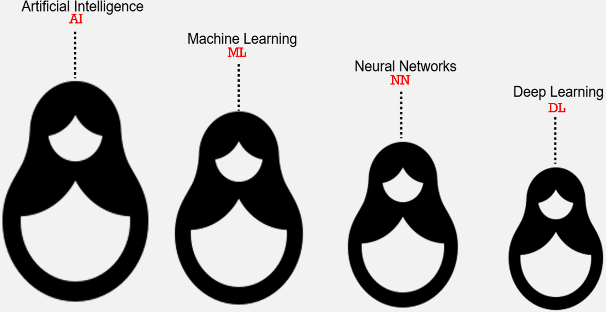
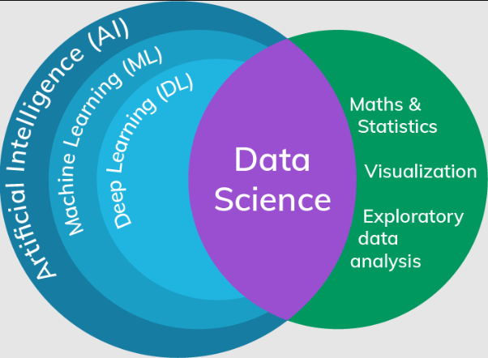
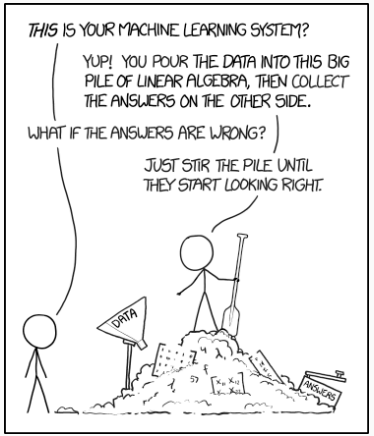

v.
Digital Attendance System (SEATS)

Be aware of the system and check your attendance
Overview
- Overview of the module structure
- Overview of the assignments
- Teaching plans
Module Structure
Machine Learning vs. Classical AI
Recall the relationship between AI, ML, NN, and DL.
Machine Learning vs. Classical AI
|
|
|
|---|---|
|
programming-centric author controls analyse and deconstruct problems (relatively) explainable |
data-centric driven by data looking for patterns in data often hard to explain |
Why ML?
- Some problems are
hard for traditional AI to solve - Requires heuristics or expert knowledges
- Not always easy to articulate
- work out how you know someone from their face
- the best position to catch a ball
- how to drive a car and/or motorbike
- Not easy to find a generalised rule
Data Science
- Using computer science and maths to address problems
- A bunch of techniques to analyse data
- Often uses large amounts of data to reach conclusions - big data
Business Cases
Possible questions that could be answered with data science / machine learning:
- where do players get bored of our game?
- how can we get players to spend more?
- what in-game items can we create that players will want to buy?
- how can we create more compelling experiences for players?
Can you start to see where the possible ethical issues could be?
e.g. micro-transactions in games: consumers, particularly young people, can spend substantial money on digital goods in games. Fairness and the potential exploitation of vulnerable consumers are pressing ethical concerns here.
Machine Learning
- Making use of (hidden) patterns in data to make predictions
- Patterns != causes
- Possible intent/ethics issues
Possible Use Cases
- Automated play testing
- How easy / difficult is the game level?
- Opponents / Bots for games
- Cool research papers / websites
- Useful to other fields (automated driving, Brain-Computer-Interface)
Caution
- Algorithms do as they are told - human made the choices
- You cannot just stick machine learning into something and call it 'done' - not a magic bullet
- Up to you to define the evaluation methods - what 'good' means
- Could need to deal with bad data (outliers)
- AI could take shortcuts / unintended consequences
- Exploiting physics bugs / AI behaviour
- Encountering unknown situations
- Adversarial examples
This Study Block
- During this study block, we'll be going over some of the fundamental ideas in machine learning
- You are encouraged to read-around the topics if you find it interesting
- Some useful information has been provided in the reading list
- You might need explore further after some sessions if the maths are heavy in the lectures
ML Topics
We'll cover several important topics in the area of machine learning:
- Genetic Algorithms
- Supervised Learning
- Unsupervised Learning
- Convolutional Neural Networks (CNN)
- Generative Adversarial Networks (GAN)
- ...
Teaching
Module Delivery
Who am I?
-
Name: Dr Daniel Zhang -
Role: Senior Lecturer in Artificial Intelligence -
Background: - worked for
Rolls-Royce UTC atUniversity of Southampton (aircraft engine design & optimisation) - focused on
AI/ML and their Applications - delivered
more than 10 successful software and production tools toRolls-Royce to solve their computational engineering problems - supported Rolls-Royce engineers in
five R&D Centres:Bristol (UK),Derby (UK),Dahlewitz (Germany),Illinois (US),Bangalore (India)
- worked for
Who am I?
-
Name: Dr Daniel Zhang -
Role: Senior Lecturer in Artificial Intelligence -


Who am I? (cont.)
-
Name: Dr Daniel Zhang -
Role: Senior Lecturer in Artificial Intelligence -
Teaching: MSc courses in Games Academy- Classical Artificial Intelligence
- Machine Learning
-
Other activities : dissertation, group project, PhD supervision, research, etc.
Email Policy
-
Short andto-the-point email will be read. (or MS Teams). - Talk to me
before orafter class during my office hours. - An alternative mutually acceptable meeting time may need to be agreed upon if there's an unavoidable scheduling conflict.
Assessment
Assignment
There are 2 submissions for this module, which are weighted differently and have different marking rubrics.
- Application of Machine Learning Techniques (
$70\%$ ) - Development Journal (
$30\%$ )
Important Notes
Deadline: check
-> Please note: late submission WILL be penalised!
You marks would be capped for anything past the due date, unless you have an approved
Applications of Machine Learning Techniques
Create a 'game' and an implementation of an AI that can play the game
- The steps:
- Choose an environment
- Choose an algorithm
- Investigate algorithm performance in the environment
- Evaluate agent performance
- Iterate on solution
Game Selection
- Choose something small & simple to implement (something you can write in a few hours - not days or weeks)
- Consider a 'turn-based' game to make it easy to iterate between player and AI actions
- Careful, some modern board games can be deceptively complex to implement
- Choose something relatively quick to implement/already exists.
Examples/Ideas
Good choices:
- 'Classic' arcade games
- Card games
- Board games
- Tetris
- Any other games that are simple enough but easy to collect data
Don't spend ages making a game only to find out it's not suitable!
Development Journal
A development journal is a week-by-week academic journal of your experiences in creating ML-based agents for a game.
Think of it as a collection of reports detailing your development issues and your attempt to find solutions.
- Problems: description and scope
- Solutions: synthesis and quality
- Writing and diagramming
- Further enquiries
- Solution reflections
Some Notes
- Application and Journal would be marked differently
- Refer to marking rubrics for details
- Take an agile approach
- Start early as ML is different from classical AI
- Problem & Data
- Algorithm Design & Implementation
- Evaluation & Iteration
- Release & Maintain
Version Control
Manage your work using version control tools
The journal can record your progress but has to comply with academic standards
Questions?